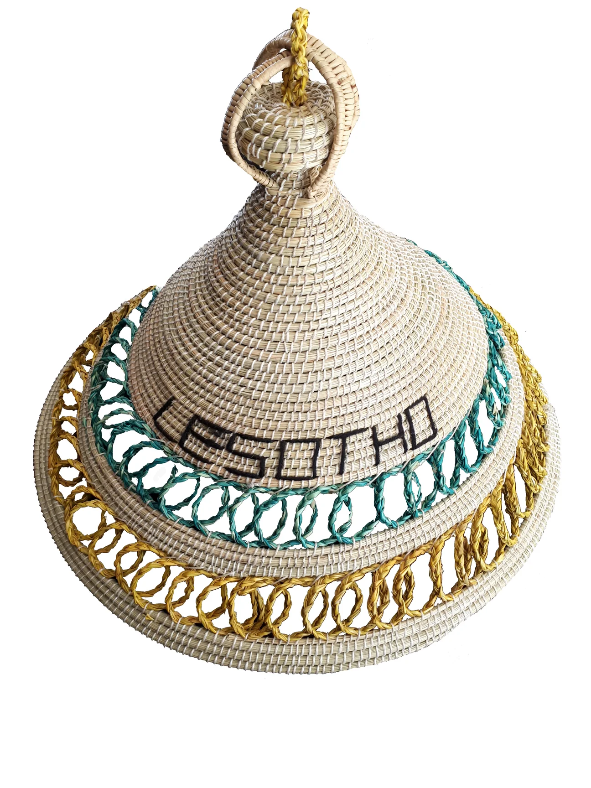
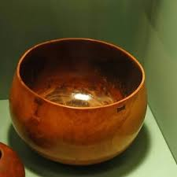
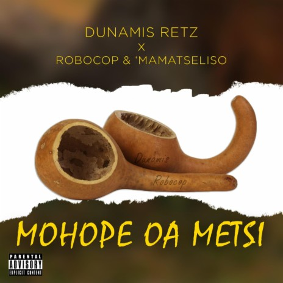
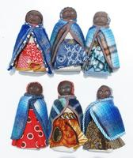
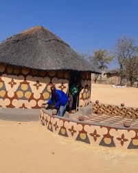
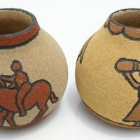

mokorotlo
The fomous conical hat is made from moseha grass and has a top knot shape inspired by Qiloane mountain.
see morelefisoana
In Basotho culture, a lefisoana is a smaller, serving-sized clay bowl used for serving food, distinct from the larger lefiso bowl for storing liquids.
see moremohope
In the context of Basotho culture, "mohope" refers to a calabash, a traditional utensil used for drinking or serving beverages.see more
moseme

Women in Lesotho produce beautiful, handmade baskets and other woven items, often using traditional techniques and local grasses.see more
leloala le tsiloana

The little one 'Tsiloana' translated as grinding is used as rotar grinder or crusher of curious material such as grain, snuff and other raw food.see more
popi
doll made for young baby girls to play with ,it is made up of old clothe.see more
litema
These are graphic designs, often featuring geometric patterns, that adorn the walls of Basotho homes.see more
nkho
an important traditional craft that includes other pottery like the large, narrow-necked nkho for carrying water and the shallow mokeke for dishing up meat or beer.see more